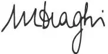
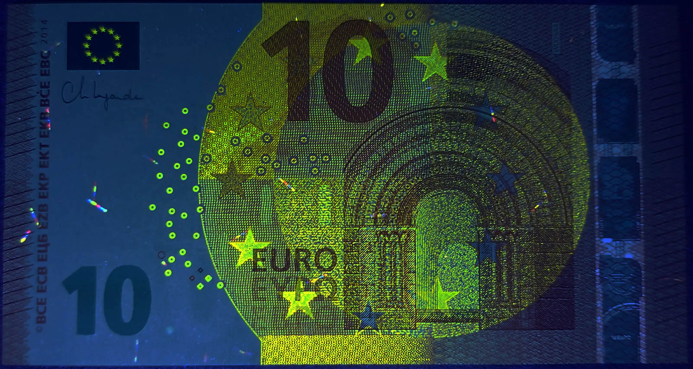

Banknotes EUR
€10 2014-2019
Series: Windows and Doorways of Europe
Obverse

Description
On the front are shown windows and doorways. They symbolise the European spirit of openness and cooperation. The banknote shows the architectural style from the Romanesque period in Europe's history, but does not show any actual existing monuments or bridges.
Scripts
Cyrillic, Greek, Latin
Lettering:
BCE ECB ЕЦБ EZB EKP ΕΚΤ EKB BĊE EBC 2014
10 EURO ΕΥΡΩ ЕВРО
Reverse

Description
The bridges on the reverse of the Europa banknotes symbolize communication between the people of Europe and between Europe and the rest of the world. The reverse also contains a map of Europe surrounded by the 12 stars of the European flag.
Scripts
Cyrillic, Greek, Latin
Lettering:
10 EURO ΕΥΡΩ ЕВРО
Watermark
Portrait of Europa (a figure from Greek mythology), value of the banknote and window.
Signatures
Mario Draghi (MD) President of the European Central Bank 11/01/2011 – 10/31/2019
Christine Lagarde (CL) President of the European Central Bank 11/01/2019 - present

Security №1
Obverse UV activity (365nm). The obverse fluoresces a yellow-green colour only. The east and south diamonds fluoresce but the west and north do not.
Security №2
Reverse UV activity (365nm). The iridescent ink strip fluoresces pink and the quarter circle fluoresces pale green. On this side only the west diamond fluoresces and it is green.
Security №3
The banknote contains a security strip with the inscription "€ 5"
Security №4
The hologram has a perforation under light.
Security №5
It is printed in colour-changing ink. It changes colour from emerald green to teal when the note is tilted.
Security №6
On the reverse is a pale gold iridescent ink strip with the inscription “€ 5”:
Security №7
On the obverse to the left of the word “ΕΥΡΩ” is a cluster of four diamond shapes, labelled here as four compass points N, E, S, W
Security №8
On the reverse to the right of the green 5 is another cluster of four diamonds, labelled here as four compass points N, E, S, W:
Security №9
On the obverse there is a blue circle which seems out of place:
Security №10
On the reverse there are four diamonds. Take note of the east one. It is green:
Security №11
Under backlight the blue circle and green diamond come together as a registration marker. The diamond sits exactly in the middle of the circle:
Country & Printer Codes
The horizontal number comprises of 2 letters and 10 digits. The first letter identifies the printer where the note was printed (see the list below). The second letter has no particular meaning; it simply makes more serial numbers possible.E - France
F - Bulgaria
M - Portugal
N - Austria
P - Netherlands
R - Germany
S - Italy
T - Ireland
U - France
V - Spain
W - Germany
X - Germany
Y - Greece
Z - Belgium
Characteristics
Composition: Paper (Cotton fiber)Size: 127 × 67 mm |